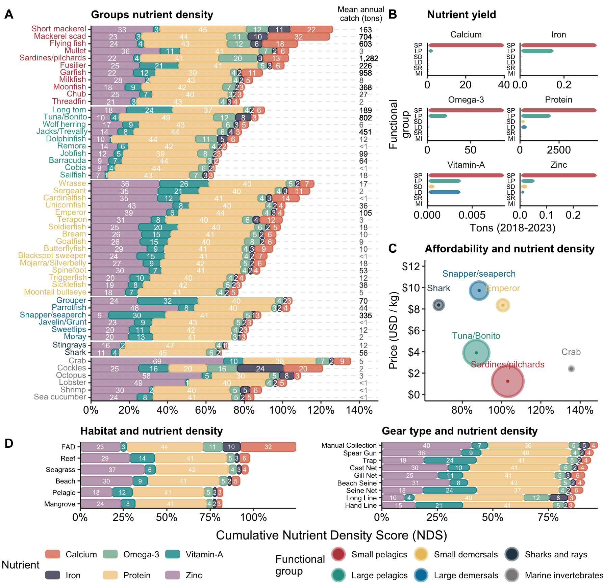

Home
1
Content
2
Highlight statistics
2.1
Timor-Est SSF nutritional scenario
3
Nutrients distribution
3.1
Fish groups
3.2
Habitat and gear type
3.3
Nutritional contribution and economic profiling
4
Timor SSF nutritional profiles
4.1
Methods
4.1.1
XGBoost model performance
References
GitHub
Modelling scenarios for nutrient-sensitive fisheries management
3
Nutrients distribution
3.1
Fish groups

Figure 3.1: To define
3.2
Habitat and gear type
3.3
Nutritional contribution and economic profiling